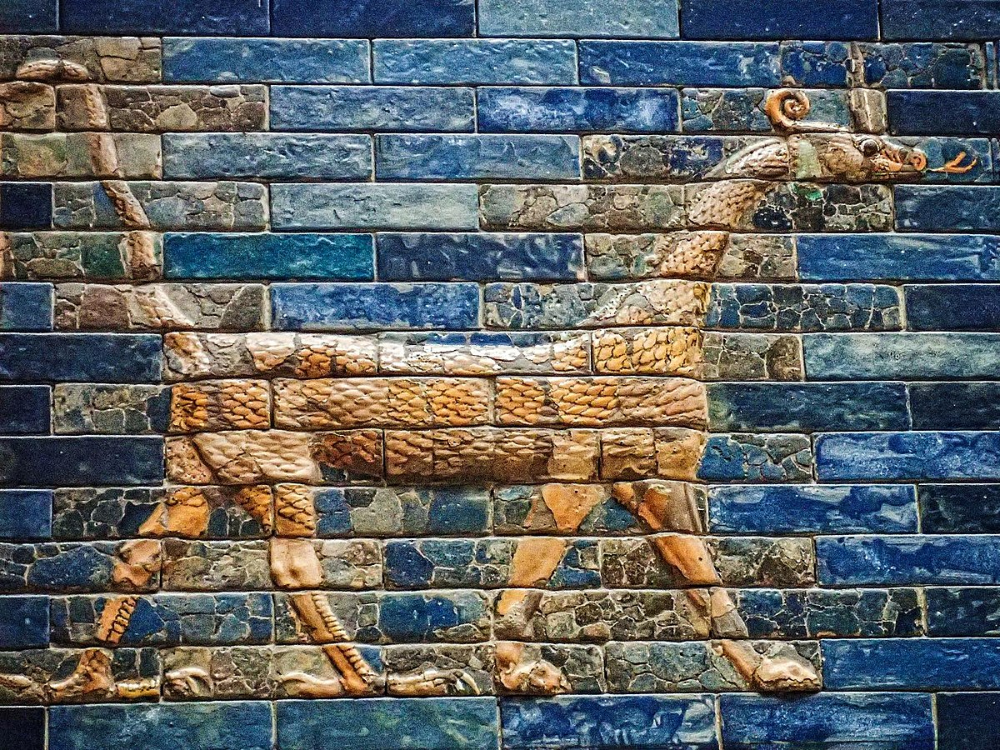
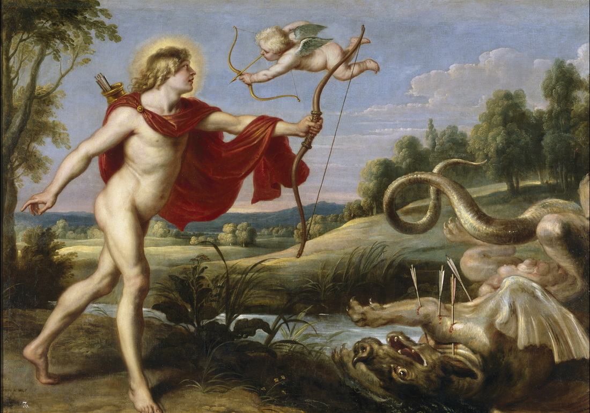
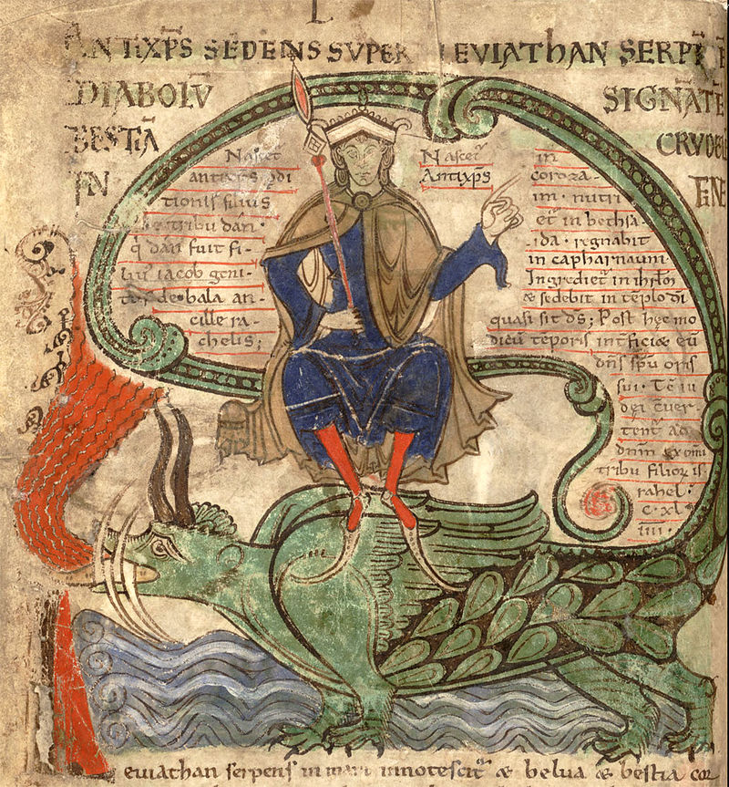

Draconic creatures are first described in the mythologies of the ancient Near East and appear in ancient Mesopotamian art and literature. Stories about storm-gods slaying giant serpents occur throughout nearly all Near Eastern and Indo-European mythologies.
The first dragon myths appear with the Sumerian legends of the god-mother Tiamat who transforms herself into a legged, horned serpent, and of the snake Zu who steals the law tablets. Dragons appear in Chinese and Indian legends in about 2700 B.C., and in Egypt a creation myth describes the dragon Apep.
What is the oldest legend of dragons?
Possibly the oldest dragon myth recorded, the Mušḫuššu dates back to 2100 BCE.
in the language translates to “furious snake.” The Mesopotamians described these creatures as scaly animals with the hind-legs of an eagle, the forelimbs of a lion, a thin, long body, a horned head and a snake-like tongue. They are the children of Tiamat, the primordial goddess of water, and Enki, the god of chaos.Mušḫuššu
Fast-forward several centuries, and there was a surge of dragons in the courts of Muslim rulers from Turkey to South Asia. In the medieval and early modern periods, these regions were knit together by a shared courtly culture steeped in Persian language, lore and traditions. The famous epic the Shahnama (or the Persian Book of Kings) composed by the seminal Persian writer Firdawsi in the late 10th and early 11th centuries was read and re-read across this broad region. It reached towards a pre-Islamic mythic past, drawing on a mix of history, popular folklore, and Islamic cosmology, and its heroes, like Rustum (below), often faced-off dragons.
Later, dragons also appeared in Islamic miniature paintings. You might think that this art form would have been most prevalent in the Middle East, but the craft of miniature painting actually reached its peak in India under the Turkic Muslim dynasty known as the Mughals. The 16th century Mughal emperor Akbar was a great patron of the arts, and his workshop produced many marvelous illuminated texts.
One of the most popular mythological creatures is the dragon, a giant serpent who can live in the air, the sea or on land. The dragon is also one of the oldest legends, believed by mythologists to arise from ancient people’s discovery of dinosaur bones. Today, we see many variations of dragons in literature but the fascination with these huge reptiles started far before the modern era. Ranging anywhere from holy protectors to evil gods, these are the first myths of dragons from around the world.
Also called the Apophis in Greek, this giant serpent was actually the deity of chaos in Egypt and the opponent of light and order. He has many titles including Enemy of Ra, Serpent from the Nile and of course, Evil Dragon. Some descriptions of the snake measure him 16 yards long with a head made of flint. Rather than being a primordial being, myths usually explain Apep’s creation as the result of Ra’s birth, forming from his umbilical cord.
Python was a giant serpent, child of the titan Gaia, who lived at the center of the earth to protect the Delphinic oracle. Sources claim the creature birthed out of the mud left after a great primordial flood. Hera sent this dragon to pursue another one of Zeus’s innumerable love interests who was pregnant with twins Artemis and Apollo.
Apollo took revenge on the serpent for tormenting his mother and slew Python with a volley of a hundred arrows, claiming the Delphinic oracle for himself. In the attempt to purify himself of his sin, Apollo became the founder of the Pythian games at Delphi. Named after the slayed Python, these games are the second of the Panhellenic games, following the Olympics.
The Qiulong, or Chinese horned dragon, dwells in the clouds or in water. Chinese mythology depicts the creatures as lithe, thin serpents with the antlers of a stag, claws of an eagle, ears of a cow and a horse’s tail. The Qiulong were believed to be extremely powerful creatures that when they fly, they create storms and lighting around them. Overall, their powers consist of divinity, water, weather and wealth. They also often own a giant pearl which, to some myths, claim is the source of their immortality and strength.
Qiulong exist in Chinese legends for centuries and appear in multiple places. They especially were associated with the imperial rulers and so often can be found in items from royalty. There are countless myths about specific dragons as well as kings imbued with the powers of the dragon.
Translated to the English name “Leviathan”, the Livyatan was a primordial fire-breathing sea serpent in Jewish mythology. Appearing in Psalms 74:14, this creature is described as a multi-headed snake killed by the archangels and given to the Hebrew people who were starving in the wilderness. The Hebrews also associated Livyatan with enemies of Israel. Its brothers are Behemoth, the giant of the earth and Ziz, the monster of the air.
When Christianity took over the Old Testament, Livyatan received the name change to Leviathan. Also, the creature became a symbol for the devil and general evil. In Catholicism, Leviathan is the name of the sin of Envy. Over time, Livyatan became a serpent-like demon rather than a powerful spirit of heaven.
| Aspect | Description |
|---|---|
| Origin | Mythological creatures believed to originate from various cultures worldwide. |
| Appearance | Varies widely across cultures, often depicted as large, serpentine, or reptilian. |
| Abilities | Possess magical or supernatural powers such as breathing fire, flight, or shapeshifting. |
| Behavior | Often portrayed as fierce and powerful, guarding treasures or terrorizing communities. |
| Cultural Significance & Role in Myths | Symbolize strength, wisdom, or chaos depending on the culture and context. |
| Feature prominently in folklore, mythology, and literature across different civilizations. | |
| Examples | Chinese dragons, European dragons, Slavic dragons, Welsh dragons, etc. |